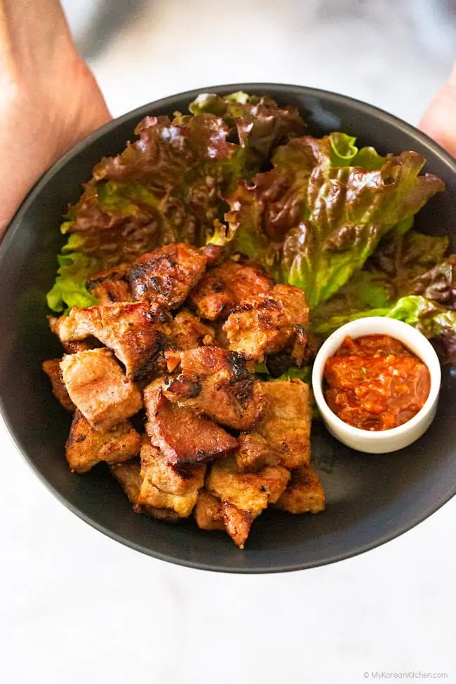

The Easy Recipe of Korean cuisine
Korean BBQ Pork

Ingredients
- 1.2 kg pork collar
- 1 medium onion
- 1 red apple
- 1/2 cup water
- 6 Tbsp soy sauce
- 3 Tbsp dark brown sugar
- 2 Tbsp rice wine
- 1 Tbsp minced garlic
- 1/2 Tbsp minced ginger
- 1/8 tsp ground black pepper
Step
-
Blend the onion, red apple, and water in a food
processor or blender until smooth. Pour the blended
ingredients into a medium-sized bowl. Add the
remaining marinade sauce to this and mix well.
-
Lightly slice the pork in a diamond-like pattern
for the marinade sauce to be absorbed and also to
tenderize the meat.
-
Place the meat in the glass container and pour
the marinade mixture over it. Mix them well
together – top to bottom and also between the meat.
Cover the container with its lid and marinate it
for at least 4 hours in your fridge, but preferably
longer to deepen the flavor.
-
Take the meat out of the fridge at least 30
minutes before cooking.
-
Preheat a skillet or grill on medium-high heat.
If using a skillet, add some cooking oil.
Place the meat and cook until both sides are fully
cooked.Cut the meat into bite-size pieces with a
pair of scissors as the meat cooks.
Kimchi pancakes

Ingredients
- 2 & 1/2 cup all-purpose flour
- 2 & 1/2 cup water
- 1/2 tsp fine sea salt
- 1 large egg, beaten
- 2 cups kimchi
- 1 Tbsp kimchi liquid
- 5 ice cubes
- 2 green chili
- 1 red chili
- Homemade Kimchi pancake dipping sauce
Step
-
Sieve the flour and the salt. Add the water and
whisk it well. Add the beaten egg, Kimchi,
Kimchi liquid, chilies, and the ice cubes to keep
the batter cold.
-
Pre heat a pan until well heated. Put a generous
amount of cooking oil into the pan. Make
sure the oil is spread all the way over the pan.
-
Scoop out the pancake mixture with a ladle, pour
it out on the pan. Make sure it is evenly spread.
-
Cook the mixture on high heat initially for 10 to
20 seconds then reduce the heat to medium to low.
-
Turn the pancake over when 70% of the pancake is
cooked. Press the pancake with the spatula
a couple of times to make it crispy.
Bulgogi

Ingredients
- 800 g / 1.76 pounds rib eye or top sirloin
- 1 & 1/2 onion
- 2 stalks green onion
- 1/2 carrot
- 1 Tbsp toasted sesame oil
- 1 Tbsp toasted sesame seeds
- 6 Tbsp soy sauce
- 3 Tbsp brown sugar
- 2 Tbsp rice wine
- 1 asian pear or red apple
- 1 Tbsp minced garlic
- 1 tsp minced ginger
- 1/8 tsp ground black pepper
Step
-
Blend the marinade ingredients in a mixer or
food processor until smooth. Set aside.
-
Place the thinly sliced meat in a mixing bowl
and pour the marinade over it. Mix them
well together while gently massaging the meat
with your hands.
-
Add the sesame oil and mix it into the meat.
-
Cover the bowl with cling wrap and marinate the
meat for at least 4 hours in the fridge.
-
Preheat a skillet / bbq grill on medium high heat
until well heated. Add the cooking oil
and spread it well. Add the meat and vegetables
and cook it on medium high to high heat for 3 to 5 mins
Bibimbap

Ingredients
- 100 g beef mince
- 1 Tbsp soy sauce
- 1 Tbsp sesame oil
- 1 tsp brown sugar
- 1 & 1/4 tsp minced garlic
- 250 g spinach
- 350 g bean sprouts
- 100 g shiitake mushroom
- 120 g carrots
- 1/2 tsp fine sea salt
- 3 cups steamed rice
- 3 eggs
- Some toasted seasoned seaweed
- 2 Tbsp gochujang
- 1 Tbsp sesame oil
- 1 Tbsp sugar
- 1 Tbsp water
- 1 tsp vinegar
Step
-
Marinate the meat for about 30 mins while you
are working on other ingredients to enhance
the flavour.
-
Add some cooking oil into a wok and cook the
meat on medium high to high heat.(3-5 mins)
-
Mix the bibimbap sauce ingredients in a bowl.
-
Cook spinach and bean sprouts , and rinse, peel
and julienne the carrots.
-
Add some cooking oil and 1/4 tsp of fine sea salt
in a wok and cook the carrots on medium
high to high heat (2-3 mins)
-
Clean the shiitake mushrooms and thinly slice them.
-
Add some cooking oil and 1/4 tsp of fine sea salt
in a wok and cook the mushrooms on medium
high to high heat until they are all cooked.(2-3 mins)
-
Make fried eggs.
-
Put the rice into a bowl and add the meat, assorted
vegetables, seasoned seaweed, bibimbap
sauce, and the egg on top of the rice